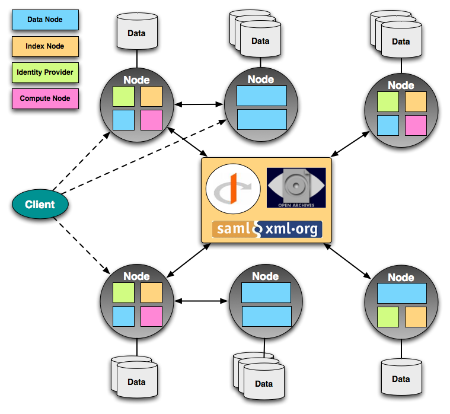

ESGF Federation Design
The Earth System Grid Federation (ESGF) is a spontaneous collaboration of
groups, agencies and institutions around the world, that are dedicated to the
development and operation of a long-term system for the management, access and
analysis of climate data. Some of the challenges that ESGF is committed to
address include:
- The enormous scale of the data holdings, moving from Peta-bytes to Exa-bytes
- Support for both model output and a wide variety of observational data
- The distributed nature of the data archives, which are geographically
distributed and autonomously operated * The need to enable users to access
and analyze data with a wide variety of client tools - not just web browsers,
but also rich desktop clients, libraries and toolkits
- The need to harmonize and federate multiple local access policies
The ESGF architecture is based on a system of autonomous and distributed Nodes,
which interoperate through common acceptance of federation protocols and trust
agreements. Data is stored at multiple Nodes, and served through local data and
metadata services. Nodes exchange information about their data holdings and
services, trust each other for registering users and establishing access
control decisions. The net result is that a user can use a web browser or rich
desktop client, connect to any Node, and seamlessly find and access data
throughout the federation (see ESGF Architecture for more details).

At each Node, the ESGF software stack is the result of the integration of
multiple applications and servers, either developed by some of the ESGF
partners, or freely available from the community. The ESGF software development
methodology is based on the principle of modularity, open source and
open development (see the ESGF Manifesto for more details).
The ESGF Federation Protocols
Interoperability among all Nodes in the ESGF federation is based on a
peer-to-peer paradigm for exchanging information about services, trusts, and
metadata holdings. Specifically, the following protocols and mechanism make all
the Nodes in the federation work together as a whole:
- The ESGF Registry. The ESGF Registry contains all relevant information
about each Node in the federation: its type, the URL endpoints of the
services it exposes, its public certificates, and so on. This information is
not kept in a central location, rather it is continually exchanged among all
Nodes so that each Node always has a local up-to-date copy of the state of
the whole federation. * Single-Sign-On. Because all ESGF Nodes trust
each other's certificate authorities, a user can register and authenticate at
any of the Nodes, and be granted credentials that are honored throughout the
federation. The type of credentials granted depends on how the user is
accessing the system:
- If using a web browser, the OpenID protocol is used to exchange
authentication information between the site where the user authenticates,
and any other site. * If using a desktop client, an X509 short term
certificate is transmitted by the client to any server that requests the
user to authenticate.
- Distributed Access Control. The data served from each Node may need to
be protected by policies that are administered at another Node. The ESGF
security infrastructure supports this model by establishing mutual trust
among all the constituents Nodes, and by transmitting security information
(Attribute and Authorization statements) as signed documents encoded as SAML
(The Security Assertion Markup Language). * Metadata Exchange. All Nodes
in the federation continually exchange search and discovery metadata about
their data holdings. As a consequence, when users initiate a search at any
one site, they are able to discover resources of interest through the whole
federation.
ESGF Clients
Traditionally, the data and metadata services deployed throughout the ESGF
system have been made available to users through a standard web browser.
Increasingly though the ESGF collaboration is working towards enabling direct
access to these services via rich desktop clients and toolkits, which allow
scripted and more powerful access. Specifically, the following clients are
being developed.
- UV-CDAT. UV-CDAT is a high-performace visualization client that allows
the user to query the ESGF data catalogs via any metadata category, and
either download the selected files, or create visualization plots. * Data
Mover Light. Data Mover Light (DML) is a high performance desktop client
that allows bulk download of data files via either HTTP or GridFTP.
- Climate Data Exchange. The Climate Data Exchange (CDX) is the
combination of server-side components and a client-side toolkit library that
work together to expose the ESGF distributed data holdings as if it was a
local file system, and to issue data processing commands that are executed on
the servers, returning only the data results to the user desktop.

{kind=link}